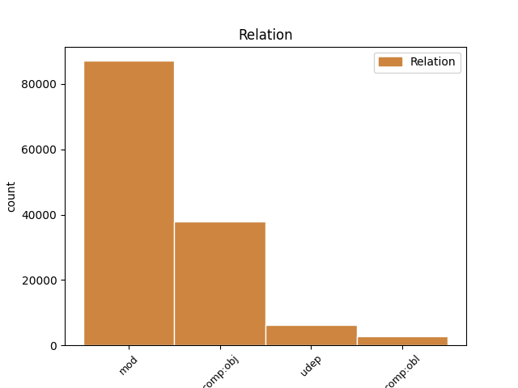
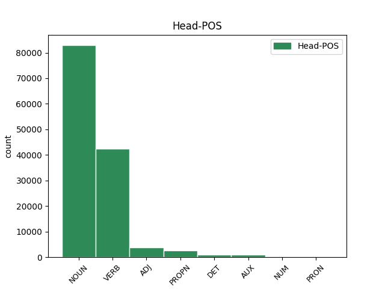
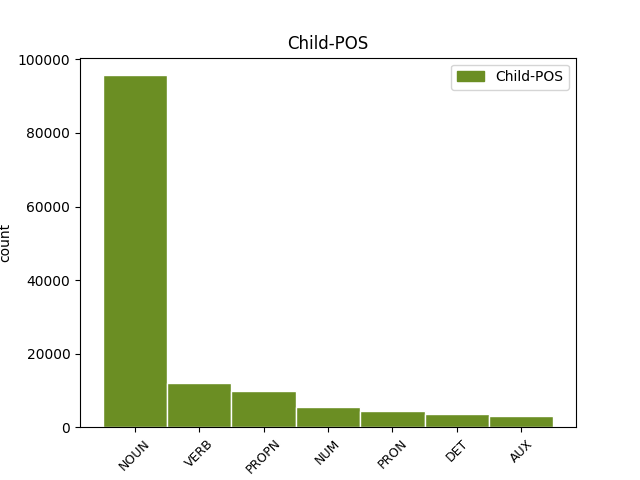

Distribution of features within this leaf



Agreement Rules sorted by frequency.
- When the dependent token is the modifer(mod) of the head token, and the dependent token is NOUN.
1 Proto _ _ _ _ 0 _ _ _
2 je _ _ _ _ 0 _ _ _
3 třeba _ _ _ _ 0 _ _ _
4 připomenout _ _ _ _ 0 _ _ _
5 , _ _ _ _ 0 _ _ _
6 že _ _ _ _ 0 _ _ _
7 riziko riziko NOUN NNNS1-----A---- Case=Nom|Gender=Neut|Number=Sing|Polarity=Pos 0 _ _ _
8 takové _ _ _ _ 0 _ _ _
9 globálně _ _ _ _ 0 _ _ _
10 ničivé _ _ _ _ 0 _ _ _
11 srážky srážka NOUN NNFS2-----A---- Case=Gen|Gender=Fem|Number=Sing|Polarity=Pos 7 mod _ _
12 v _ _ _ _ 0 _ _ _
13 nejbližším _ _ _ _ 0 _ _ _
14 století _ _ _ _ 0 _ _ _
15 je _ _ _ _ 0 _ _ _
16 opravdu _ _ _ _ 0 _ _ _
17 minimální _ _ _ _ 0 _ _ _
18 ; _ _ _ _ 0 _ _ _
1 Otec _ _ _ _ 0 _ _ _
2 americké _ _ _ _ 0 _ _ _
3 vodíkové _ _ _ _ 0 _ _ _
4 pumy _ _ _ _ 0 _ _ _
5 Edward _ _ _ _ 0 _ _ _
6 Teller _ _ _ _ 0 _ _ _
7 se _ _ _ _ 0 _ _ _
8 už _ _ _ _ 0 _ _ _
9 nechal _ _ _ _ 0 _ _ _
10 slyšet _ _ _ _ 0 _ _ _
11 , _ _ _ _ 0 _ _ _
12 že _ _ _ _ 0 _ _ _
13 by _ _ _ _ 0 _ _ _
14 se _ _ _ _ 0 _ _ _
15 mohla _ _ _ _ 0 _ _ _
16 vyvinout _ _ _ _ 0 _ _ _
17 kosmická _ _ _ _ 0 _ _ _
18 bomba _ _ _ _ 0 _ _ _
19 na _ _ _ _ 0 _ _ _
20 úrovni _ _ _ _ 0 _ _ _
21 sto _ _ _ _ 0 _ _ _
22 gigatun _ _ _ _ 0 _ _ _
23 ( _ _ _ _ 0 _ _ _
24 ! _ _ _ _ 0 _ _ _
25 ! _ _ _ _ 0 _ _ _
26 ) _ _ _ _ 0 _ _ _
27 TNT _ _ _ _ 0 _ _ _
28 , _ _ _ _ 0 _ _ _
29 což _ _ _ _ 0 _ _ _
30 vyvolalo vyvolat VERB VpNS---XR-AA--- Aspect=Perf|Gender=Neut|Number=Sing|Polarity=Pos|Tense=Past|VerbForm=Part|Voice=Act 0 _ _ _
31 zděšení zděšení NOUN NNNS4-----A---- Case=Acc|Gender=Neut|Number=Sing|Polarity=Pos 30 comp:obj _ LDeriv=zděsit
32 mezi _ _ _ _ 0 _ _ _
33 astronomy _ _ _ _ 0 _ _ _
34 i _ _ _ _ 0 _ _ _
35 novináři _ _ _ _ 0 _ _ _
36 . _ _ _ _ 0 _ _ _
1 na _ _ _ _ 0 _ _ _
2 kosmické _ _ _ _ 0 _ _ _
3 střelnici _ _ _ _ 0 _ _ _
4 zvané _ _ _ _ 0 _ _ _
5 sluneční _ _ _ _ 0 _ _ _
6 soustava _ _ _ _ 0 _ _ _
7 to _ _ _ _ 0 _ _ _
8 bude _ _ _ _ 0 _ _ _
9 téměř _ _ _ _ 0 _ _ _
10 jistě _ _ _ _ 0 _ _ _
11 člověk člověk NOUN NNMS1-----A---- Animacy=Anim|Case=Nom|Gender=Masc|Number=Sing|Polarity=Pos 0 _ _ _
12 , _ _ _ _ 0 _ _ _
13 kdo _ _ _ _ 0 _ _ _
14 vytasí vytasit VERB VB-S---3P-AA--- Aspect=Perf|Mood=Ind|Number=Sing|Person=3|Polarity=Pos|Tense=Pres|VerbForm=Fin|Voice=Act 11 mod _ _
15 jako _ _ _ _ 0 _ _ _
16 prvý _ _ _ _ 0 _ _ _
17 . _ _ _ _ 0 _ _ _
1 Teprve _ _ _ _ 0 _ _ _
2 nedávno _ _ _ _ 0 _ _ _
3 vyšlo _ _ _ _ 0 _ _ _
4 najevo _ _ _ _ 0 _ _ _
5 , _ _ _ _ 0 _ _ _
6 že _ _ _ _ 0 _ _ _
7 již _ _ _ _ 0 _ _ _
8 r _ _ _ _ 0 _ _ _
9 . _ _ _ _ 0 _ _ _
10 1981 _ _ _ _ 0 _ _ _
11 pod _ _ _ _ 0 _ _ _
12 dojmem _ _ _ _ 0 _ _ _
13 Alvarezovy _ _ _ _ 0 _ _ _
14 hypotézy _ _ _ _ 0 _ _ _
15 uspořádala _ _ _ _ 0 _ _ _
16 NASA _ _ _ _ 0 _ _ _
17 uzavřené _ _ _ _ 0 _ _ _
18 setkání _ _ _ _ 0 _ _ _
19 astronomů _ _ _ _ 0 _ _ _
20 a _ _ _ _ 0 _ _ _
21 vojenských _ _ _ _ 0 _ _ _
22 odborníků _ _ _ _ 0 _ _ _
23 ve _ _ _ _ 0 _ _ _
24 Snowmass _ _ _ _ 0 _ _ _
25 ve _ _ _ _ 0 _ _ _
26 státě stát NOUN NNIS6-----A---- Animacy=Inan|Case=Loc|Gender=Masc|Number=Sing|Polarity=Pos 0 _ _ _
27 Colorado Colorado PROPN NNNS1-----A---- Case=Nom|Gender=Neut|NameType=Geo|Number=Sing|Polarity=Pos 26 mod _ SpaceAfter=No
28 , _ _ _ _ 0 _ _ _
29 kde _ _ _ _ 0 _ _ _
30 se _ _ _ _ 0 _ _ _
31 diskutovalo _ _ _ _ 0 _ _ _
32 o _ _ _ _ 0 _ _ _
33 týchž _ _ _ _ 0 _ _ _
34 problémech _ _ _ _ 0 _ _ _
35 jako _ _ _ _ 0 _ _ _
36 na _ _ _ _ 0 _ _ _
37 XXI _ _ _ _ 0 _ _ _
38 . _ _ _ _ 0 _ _ _
39 astronomickém _ _ _ _ 0 _ _ _
40 kongresu _ _ _ _ 0 _ _ _
41 v _ _ _ _ 0 _ _ _
42 Buenos _ _ _ _ 0 _ _ _
43 Aires _ _ _ _ 0 _ _ _
44 . _ _ _ _ 0 _ _ _
1 Manévr _ _ _ _ 0 _ _ _
2 zmenšuje _ _ _ _ 0 _ _ _
3 riziko _ _ _ _ 0 _ _ _
4 rozbití _ _ _ _ 0 _ _ _
5 planetky _ _ _ _ 0 _ _ _
6 na _ _ _ _ 0 _ _ _
7 více _ _ _ _ 0 _ _ _
8 kusů _ _ _ _ 0 _ _ _
9 , _ _ _ _ 0 _ _ _
10 ale _ _ _ _ 0 _ _ _
11 současně _ _ _ _ 0 _ _ _
12 zvyšuje _ _ _ _ 0 _ _ _
13 energetickou _ _ _ _ 0 _ _ _
14 náročnost _ _ _ _ 0 _ _ _
15 " _ _ _ _ 0 _ _ _
16 úpravy _ _ _ _ 0 _ _ _
17 " _ _ _ _ 0 _ _ _
18 dráhy _ _ _ _ 0 _ _ _
19 zhruba _ _ _ _ 0 _ _ _
20 o _ _ _ _ 0 _ _ _
21 dva dva NUM ClYP4---------- Case=Acc|Gender=Masc|Number=Plur|NumForm=Word|NumType=Card|NumValue=1,2,3 22 mod _ LNumValue=2
22 řády řád NOUN NNIP4-----A---- Animacy=Inan|Case=Acc|Gender=Masc|Number=Plur|Polarity=Pos 0 _ _ _
23 , _ _ _ _ 0 _ _ _
24 čili _ _ _ _ 0 _ _ _
25 jsme _ _ _ _ 0 _ _ _
26 opět _ _ _ _ 0 _ _ _
27 u _ _ _ _ 0 _ _ _
28 100 _ _ _ _ 0 _ _ _
29 Mt _ _ _ _ 0 _ _ _
30 TNT _ _ _ _ 0 _ _ _
31 ! _ _ _ _ 0 _ _ _
1 na _ _ _ _ 0 _ _ _
2 kosmické _ _ _ _ 0 _ _ _
3 střelnici _ _ _ _ 0 _ _ _
4 zvané zvaný ADJ AAFS6----1A---- Case=Loc|Degree=Pos|Gender=Fem|Number=Sing|Polarity=Pos 0 _ _ _
5 sluneční _ _ _ _ 0 _ _ _
6 soustava soustava NOUN NNFS1-----A---- Case=Nom|Gender=Fem|Number=Sing|Polarity=Pos 4 udep _ _
7 to _ _ _ _ 0 _ _ _
8 bude _ _ _ _ 0 _ _ _
9 téměř _ _ _ _ 0 _ _ _
10 jistě _ _ _ _ 0 _ _ _
11 člověk _ _ _ _ 0 _ _ _
12 , _ _ _ _ 0 _ _ _
13 kdo _ _ _ _ 0 _ _ _
14 vytasí _ _ _ _ 0 _ _ _
15 jako _ _ _ _ 0 _ _ _
16 prvý _ _ _ _ 0 _ _ _
17 . _ _ _ _ 0 _ _ _
1 K _ _ _ _ 0 _ _ _
2 detekci _ _ _ _ 0 _ _ _
3 planetek _ _ _ _ 0 _ _ _
4 navrhují _ _ _ _ 0 _ _ _
5 totiž _ _ _ _ 0 _ _ _
6 použít _ _ _ _ 0 _ _ _
7 výkonných _ _ _ _ 0 _ _ _
8 radiolokátorů radiolokátor NOUN NNIP2-----A---- Animacy=Inan|Case=Gen|Gender=Masc|Number=Plur|Polarity=Pos 0 _ _ _
9 na _ _ _ _ 0 _ _ _
10 oběžné _ _ _ _ 0 _ _ _
11 dráze _ _ _ _ 0 _ _ _
12 kolem _ _ _ _ 0 _ _ _
13 Země _ _ _ _ 0 _ _ _
14 , _ _ _ _ 0 _ _ _
15 které _ _ _ _ 0 _ _ _
16 budou být AUX VB-P---3F-AA--- Mood=Ind|Number=Plur|Person=3|Polarity=Pos|Tense=Fut|VerbForm=Fin|Voice=Act 8 mod _ _
17 nepřetržitě _ _ _ _ 0 _ _ _
18 " _ _ _ _ 0 _ _ _
19 pročesávat _ _ _ _ 0 _ _ _
20 " _ _ _ _ 0 _ _ _
21 kosmický _ _ _ _ 0 _ _ _
22 prostor _ _ _ _ 0 _ _ _
23 až _ _ _ _ 0 _ _ _
24 do _ _ _ _ 0 _ _ _
25 vzdálenosti _ _ _ _ 0 _ _ _
26 100 _ _ _ _ 0 _ _ _
27 miliónů _ _ _ _ 0 _ _ _
28 km _ _ _ _ 0 _ _ _
29 od _ _ _ _ 0 _ _ _
30 Země _ _ _ _ 0 _ _ _
31 . _ _ _ _ 0 _ _ _
1 Riziko _ _ _ _ 0 _ _ _
2 tedy _ _ _ _ 0 _ _ _
3 hrozí _ _ _ _ 0 _ _ _
4 spíše _ _ _ _ 0 _ _ _
5 od _ _ _ _ 0 _ _ _
6 těles _ _ _ _ 0 _ _ _
7 , _ _ _ _ 0 _ _ _
8 která který DET P4NP4---------- Case=Acc|Gender=Neut|Number=Plur|PronType=Int,Rel 12 comp:obj _ _
9 jsme _ _ _ _ 0 _ _ _
10 dosud _ _ _ _ 0 _ _ _
11 nikdy _ _ _ _ 0 _ _ _
12 nepotkali potkat VERB VpMP---XR-NA--- Animacy=Anim|Aspect=Perf|Gender=Masc|Number=Plur|Polarity=Neg|Tense=Past|VerbForm=Part|Voice=Act 0 _ _ _
13 . _ _ _ _ 0 _ _ _
1 Ze _ _ _ _ 0 _ _ _
2 zcela _ _ _ _ 0 _ _ _
3 nenápadné _ _ _ _ 0 _ _ _
4 astronomicky _ _ _ _ 0 _ _ _
5 poklidné _ _ _ _ 0 _ _ _
6 disciplíny _ _ _ _ 0 _ _ _
7 se _ _ _ _ 0 _ _ _
8 tak _ _ _ _ 0 _ _ _
9 rázem _ _ _ _ 0 _ _ _
10 stalo _ _ _ _ 0 _ _ _
11 politikum _ _ _ _ 0 _ _ _
12 prvého _ _ _ _ 0 _ _ _
13 řádu _ _ _ _ 0 _ _ _
14 , _ _ _ _ 0 _ _ _
15 kdy _ _ _ _ 0 _ _ _
16 se _ _ _ _ 0 _ _ _
17 v _ _ _ _ 0 _ _ _
18 astronomech _ _ _ _ 0 _ _ _
19 probouzí _ _ _ _ 0 _ _ _
20 " _ _ _ _ 0 _ _ _
21 planetární _ _ _ _ 0 _ _ _
22 ekologický _ _ _ _ 0 _ _ _
23 instinkt _ _ _ _ 0 _ _ _
24 " _ _ _ _ 0 _ _ _
25 ( _ _ _ _ 0 _ _ _
26 nesahejte sahat VERB Vi-P---2--N---- Aspect=Imp|Mood=Imp|Number=Plur|Person=2|Polarity=Neg|VerbForm=Fin 0 _ _ _
27 nám já PRON PP-P3--1------- Case=Dat|Number=Plur|Person=1|PronType=Prs 26 comp:obj _ _
28 na _ _ _ _ 0 _ _ _
29 planetky _ _ _ _ 0 _ _ _
30 : _ _ _ _ 0 _ _ _
31 je _ _ _ _ 0 _ _ _
32 to _ _ _ _ 0 _ _ _
33 neobnovitelné _ _ _ _ 0 _ _ _
34 přírodní _ _ _ _ 0 _ _ _
35 bohatství _ _ _ _ 0 _ _ _
36 ) _ _ _ _ 0 _ _ _
37 , _ _ _ _ 0 _ _ _
38 zatímco _ _ _ _ 0 _ _ _
39 vojenští _ _ _ _ 0 _ _ _
40 experti _ _ _ _ 0 _ _ _
41 cítí _ _ _ _ 0 _ _ _
42 jedinečnou _ _ _ _ 0 _ _ _
43 příležitost _ _ _ _ 0 _ _ _
44 , _ _ _ _ 0 _ _ _
45 jak _ _ _ _ 0 _ _ _
46 protáhnout _ _ _ _ 0 _ _ _
47 strategickou _ _ _ _ 0 _ _ _
48 obrannou _ _ _ _ 0 _ _ _
49 iniciativu _ _ _ _ 0 _ _ _
50 do _ _ _ _ 0 _ _ _
51 21 _ _ _ _ 0 _ _ _
52 . _ _ _ _ 0 _ _ _
53 století _ _ _ _ 0 _ _ _
54 , _ _ _ _ 0 _ _ _
55 a _ _ _ _ 0 _ _ _
56 dokonce _ _ _ _ 0 _ _ _
57 v _ _ _ _ 0 _ _ _
58 ušlechtilém _ _ _ _ 0 _ _ _
59 zájmu _ _ _ _ 0 _ _ _
60 obrany _ _ _ _ 0 _ _ _
61 všeho _ _ _ _ 0 _ _ _
62 lidstva _ _ _ _ 0 _ _ _
63 . _ _ _ _ 0 _ _ _
1 Vzpomeňme vzpomenout VERB Vi-P---1--A---- Mood=Imp|Number=Plur|Person=1|Polarity=Pos|VerbForm=Fin 0 _ _ _
2 si _ _ _ _ 0 _ _ _
3 , _ _ _ _ 0 _ _ _
4 jak _ _ _ _ 0 _ _ _
5 lépe _ _ _ _ 0 _ _ _
6 nám _ _ _ _ 0 _ _ _
7 chutnaly chutnat VERB VpTP---XR-AA--- Animacy=Inan|Aspect=Imp|Gender=Fem,Masc|Number=Plur|Polarity=Pos|Tense=Past|VerbForm=Part|Voice=Act 1 comp:obj _ _
8 " _ _ _ _ 0 _ _ _
9 západní _ _ _ _ 0 _ _ _
10 " _ _ _ _ 0 _ _ _
11 sušenky _ _ _ _ 0 _ _ _
12 než _ _ _ _ 0 _ _ _
13 naše _ _ _ _ 0 _ _ _
14 . _ _ _ _ 0 _ _ _
1 Půjde _ _ _ _ 0 _ _ _
2 vlastně _ _ _ _ 0 _ _ _
3 o _ _ _ _ 0 _ _ _
4 tzv _ _ _ _ 0 _ _ _
5 . _ _ _ _ 0 _ _ _
6 neutronovou _ _ _ _ 0 _ _ _
7 bombu _ _ _ _ 0 _ _ _
8 se _ _ _ _ 0 _ _ _
9 zvýšenou _ _ _ _ 0 _ _ _
10 produkcí _ _ _ _ 0 _ _ _
11 neutronů _ _ _ _ 0 _ _ _
12 , _ _ _ _ 0 _ _ _
13 které _ _ _ _ 0 _ _ _
14 vypaří _ _ _ _ 0 _ _ _
15 část _ _ _ _ 0 _ _ _
16 hmoty _ _ _ _ 0 _ _ _
17 na _ _ _ _ 0 _ _ _
18 přivrácené _ _ _ _ 0 _ _ _
19 straně _ _ _ _ 0 _ _ _
20 planetky _ _ _ _ 0 _ _ _
21 , _ _ _ _ 0 _ _ _
22 čímž _ _ _ _ 0 _ _ _
23 vznikne _ _ _ _ 0 _ _ _
24 raketový _ _ _ _ 0 _ _ _
25 efekt _ _ _ _ 0 _ _ _
26 , _ _ _ _ 0 _ _ _
27 který _ _ _ _ 0 _ _ _
28 odsune _ _ _ _ 0 _ _ _
29 zbytek _ _ _ _ 0 _ _ _
30 planetky _ _ _ _ 0 _ _ _
31 " _ _ _ _ 0 _ _ _
32 bokem _ _ _ _ 0 _ _ _
33 " _ _ _ _ 0 _ _ _
34 , _ _ _ _ 0 _ _ _
35 a _ _ _ _ 0 _ _ _
36 tím _ _ _ _ 0 _ _ _
37 nebezpečné _ _ _ _ 0 _ _ _
38 těleso _ _ _ _ 0 _ _ _
39 vyhne vyhnout VERB VB-S---3P-AA--- Mood=Ind|Number=Sing|Person=3|Polarity=Pos|Tense=Pres|VerbForm=Fin|Voice=Act 0 _ _ _
40 Zemi země NOUN NNFS3-----A---- Case=Dat|Gender=Fem|Number=Sing|Polarity=Pos 39 comp:obl _ SpaceAfter=No
41 . _ _ _ _ 0 _ _ _
1 Nová _ _ _ _ 0 _ _ _
2 situace _ _ _ _ 0 _ _ _
3 ( _ _ _ _ 0 _ _ _
4 a _ _ _ _ 0 _ _ _
5 politické _ _ _ _ 0 _ _ _
6 změny _ _ _ _ 0 _ _ _
7 v _ _ _ _ 0 _ _ _
8 sousedství _ _ _ _ 0 _ _ _
9 : _ _ _ _ 0 _ _ _
10 bývalý _ _ _ _ 0 _ _ _
11 Sovětský _ _ _ _ 0 _ _ _
12 svaz _ _ _ _ 0 _ _ _
13 již _ _ _ _ 0 _ _ _
14 nepotřebuje potřebovat VERB VB-S---3P-NA--- Aspect=Imp|Mood=Ind|Number=Sing|Person=3|Polarity=Neg|Tense=Pres|VerbForm=Fin|Voice=Act 0 _ _ _
15 Finsko Finsko PROPN NNNS4-----A---- Case=Acc|Gender=Neut|NameType=Geo|Number=Sing|Polarity=Pos 14 comp:obj _ _
16 jako _ _ _ _ 0 _ _ _
17 prostředníka _ _ _ _ 0 _ _ _
18 ) _ _ _ _ 0 _ _ _
19 ? _ _ _ _ 0 _ _ _
20 ? _ _ _ _ 0 _ _ _
1 Sám _ _ _ _ 0 _ _ _
2 Popper _ _ _ _ 0 _ _ _
3 flirtuje _ _ _ _ 0 _ _ _
4 s _ _ _ _ 0 _ _ _
5 metafyzikou _ _ _ _ 0 _ _ _
6 , _ _ _ _ 0 _ _ _
7 když _ _ _ _ 0 _ _ _
8 tvrdí tvrdit VERB VB-S---3P-AA--- Aspect=Imp|Mood=Ind|Number=Sing|Person=3|Polarity=Pos|Tense=Pres|VerbForm=Fin|Voice=Act 0 _ _ _
9 : _ _ _ _ 0 _ _ _
10 " _ _ _ _ 0 _ _ _
11 Vědecký _ _ _ _ 0 _ _ _
12 objev _ _ _ _ 0 _ _ _
13 je být AUX VB-S---3P-AA--- Mood=Ind|Number=Sing|Person=3|Polarity=Pos|Tense=Pres|VerbForm=Fin|Voice=Act 8 comp:obj _ _
14 nemožný _ _ _ _ 0 _ _ _
15 bez _ _ _ _ 0 _ _ _
16 víry _ _ _ _ 0 _ _ _
17 v _ _ _ _ 0 _ _ _
18 myšlenky _ _ _ _ 0 _ _ _
19 čistě _ _ _ _ 0 _ _ _
20 spekulativní _ _ _ _ 0 _ _ _
21 povahy _ _ _ _ 0 _ _ _
22 . _ _ _ _ 0 _ _ _
23 . _ _ _ _ 0 _ _ _
24 . _ _ _ _ 0 _ _ _
25 víry _ _ _ _ 0 _ _ _
26 , _ _ _ _ 0 _ _ _
27 která _ _ _ _ 0 _ _ _
28 je _ _ _ _ 0 _ _ _
29 zcela _ _ _ _ 0 _ _ _
30 nepodložená _ _ _ _ 0 _ _ _
31 z _ _ _ _ 0 _ _ _
32 hlediska _ _ _ _ 0 _ _ _
33 vědy _ _ _ _ 0 _ _ _
34 , _ _ _ _ 0 _ _ _
35 a _ _ _ _ 0 _ _ _
36 je _ _ _ _ 0 _ _ _
37 proto _ _ _ _ 0 _ _ _
38 , _ _ _ _ 0 _ _ _
39 do _ _ _ _ 0 _ _ _
40 jisté _ _ _ _ 0 _ _ _
41 míry _ _ _ _ 0 _ _ _
42 , _ _ _ _ 0 _ _ _
43 " _ _ _ _ 0 _ _ _
44 metafyzická _ _ _ _ 0 _ _ _
45 " _ _ _ _ 0 _ _ _
46 . _ _ _ _ 0 _ _ _
1 Kasteláni _ _ _ _ 0 _ _ _
2 , _ _ _ _ 0 _ _ _
3 kteří _ _ _ _ 0 _ _ _
4 nám já PRON PP-P3--1------- Case=Dat|Number=Plur|Person=1|PronType=Prs 8 comp:obl _ _
5 z _ _ _ _ 0 _ _ _
6 hradních _ _ _ _ 0 _ _ _
7 sbírek _ _ _ _ 0 _ _ _
8 zapůjčili zapůjčit VERB VpMP---XR-AA--- Animacy=Anim|Aspect=Perf|Gender=Masc|Number=Plur|Polarity=Pos|Tense=Past|VerbForm=Part|Voice=Act 0 _ _ _
9 k _ _ _ _ 0 _ _ _
10 pokusům _ _ _ _ 0 _ _ _
11 některé _ _ _ _ 0 _ _ _
12 dobové _ _ _ _ 0 _ _ _
13 zbraně _ _ _ _ 0 _ _ _
14 a _ _ _ _ 0 _ _ _
15 součástky _ _ _ _ 0 _ _ _
16 výstroje _ _ _ _ 0 _ _ _
17 a _ _ _ _ 0 _ _ _
18 laskavě _ _ _ _ 0 _ _ _
19 přehlédli _ _ _ _ 0 _ _ _
20 nevratné _ _ _ _ 0 _ _ _
21 následky _ _ _ _ 0 _ _ _
22 opožděně _ _ _ _ 0 _ _ _
23 ukončených _ _ _ _ 0 _ _ _
24 testů _ _ _ _ 0 _ _ _
25 , _ _ _ _ 0 _ _ _
26 si _ _ _ _ 0 _ _ _
27 nepřejí _ _ _ _ 0 _ _ _
28 být _ _ _ _ 0 _ _ _
29 jmenováni _ _ _ _ 0 _ _ _
30 vůbec _ _ _ _ 0 _ _ _
31 . _ _ _ _ 0 _ _ _
1 Právě _ _ _ _ 0 _ _ _
2 ono on PRON PPNS1--3------- Case=Nom|Gender=Neut|Number=Sing|Person=3|PronType=Prs 4 mod _ LId=on-1
3 nedávné _ _ _ _ 0 _ _ _
4 přiblížení přiblížení NOUN NNNS1-----A---- Case=Nom|Gender=Neut|Number=Sing|Polarity=Pos 0 _ _ _
5 k _ _ _ _ 0 _ _ _
6 Zemi _ _ _ _ 0 _ _ _
7 pozměnilo _ _ _ _ 0 _ _ _
8 její _ _ _ _ 0 _ _ _
9 dráhu _ _ _ _ 0 _ _ _
10 tak _ _ _ _ 0 _ _ _
11 , _ _ _ _ 0 _ _ _
12 že _ _ _ _ 0 _ _ _
13 při _ _ _ _ 0 _ _ _
14 příštích _ _ _ _ 0 _ _ _
15 setkáních _ _ _ _ 0 _ _ _
16 bude _ _ _ _ 0 _ _ _
17 od _ _ _ _ 0 _ _ _
18 Země _ _ _ _ 0 _ _ _
19 podstatně _ _ _ _ 0 _ _ _
20 dále _ _ _ _ 0 _ _ _
21 než _ _ _ _ 0 _ _ _
22 r _ _ _ _ 0 _ _ _
23 . _ _ _ _ 0 _ _ _
24 1992 _ _ _ _ 0 _ _ _
25 . _ _ _ _ 0 _ _ _
1 Půjde _ _ _ _ 0 _ _ _
2 vlastně _ _ _ _ 0 _ _ _
3 o _ _ _ _ 0 _ _ _
4 tzv _ _ _ _ 0 _ _ _
5 . _ _ _ _ 0 _ _ _
6 neutronovou _ _ _ _ 0 _ _ _
7 bombu _ _ _ _ 0 _ _ _
8 se _ _ _ _ 0 _ _ _
9 zvýšenou _ _ _ _ 0 _ _ _
10 produkcí _ _ _ _ 0 _ _ _
11 neutronů _ _ _ _ 0 _ _ _
12 , _ _ _ _ 0 _ _ _
13 které _ _ _ _ 0 _ _ _
14 vypaří _ _ _ _ 0 _ _ _
15 část _ _ _ _ 0 _ _ _
16 hmoty _ _ _ _ 0 _ _ _
17 na _ _ _ _ 0 _ _ _
18 přivrácené _ _ _ _ 0 _ _ _
19 straně _ _ _ _ 0 _ _ _
20 planetky _ _ _ _ 0 _ _ _
21 , _ _ _ _ 0 _ _ _
22 čímž _ _ _ _ 0 _ _ _
23 vznikne _ _ _ _ 0 _ _ _
24 raketový _ _ _ _ 0 _ _ _
25 efekt _ _ _ _ 0 _ _ _
26 , _ _ _ _ 0 _ _ _
27 který _ _ _ _ 0 _ _ _
28 odsune _ _ _ _ 0 _ _ _
29 zbytek _ _ _ _ 0 _ _ _
30 planetky _ _ _ _ 0 _ _ _
31 " _ _ _ _ 0 _ _ _
32 bokem _ _ _ _ 0 _ _ _
33 " _ _ _ _ 0 _ _ _
34 , _ _ _ _ 0 _ _ _
35 a _ _ _ _ 0 _ _ _
36 tím ten DET PDZS7---------- Case=Ins|Gender=Masc,Neut|Number=Sing|PronType=Dem 39 udep _ _
37 nebezpečné _ _ _ _ 0 _ _ _
38 těleso _ _ _ _ 0 _ _ _
39 vyhne vyhnout VERB VB-S---3P-AA--- Mood=Ind|Number=Sing|Person=3|Polarity=Pos|Tense=Pres|VerbForm=Fin|Voice=Act 0 _ _ _
40 Zemi _ _ _ _ 0 _ _ _
41 . _ _ _ _ 0 _ _ _
1 Armáda _ _ _ _ 0 _ _ _
2 svou svůj DET P8FS4---------1 Case=Acc|Gender=Fem|Number=Sing|Poss=Yes|PronType=Prs|Reflex=Yes 3 mod _ LGloss=(přivlast.)|LId=svůj-1
3 strukturou struktura NOUN NNFS7-----A---- Case=Ins|Gender=Fem|Number=Sing|Polarity=Pos 0 _ _ _
4 agresivitu _ _ _ _ 0 _ _ _
5 netlumí _ _ _ _ 0 _ _ _
6 , _ _ _ _ 0 _ _ _
7 pouze _ _ _ _ 0 _ _ _
8 přenáší _ _ _ _ 0 _ _ _
9 z _ _ _ _ 0 _ _ _
10 vyšších _ _ _ _ 0 _ _ _
11 na _ _ _ _ 0 _ _ _
12 nižší _ _ _ _ 0 _ _ _
13 a _ _ _ _ 0 _ _ _
14 z _ _ _ _ 0 _ _ _
15 těch _ _ _ _ 0 _ _ _
16 na _ _ _ _ 0 _ _ _
17 nepřítele _ _ _ _ 0 _ _ _
18 či _ _ _ _ 0 _ _ _
19 nepřátelské _ _ _ _ 0 _ _ _
20 civilní _ _ _ _ 0 _ _ _
21 obyvatelstvo _ _ _ _ 0 _ _ _
22 . _ _ _ _ 0 _ _ _
1 U _ _ _ _ 0 _ _ _
2 Jana _ _ _ _ 0 _ _ _
3 bylo _ _ _ _ 0 _ _ _
4 použito _ _ _ _ 0 _ _ _
5 i _ _ _ _ 0 _ _ _
6 palečnic _ _ _ _ 0 _ _ _
7 , _ _ _ _ 0 _ _ _
8 jimiž jenž PRON PJXP7---------- Case=Ins|Number=Plur|PrepCase=Npr|PronType=Rel 9 udep _ LGloss=(který_[ve_vedl.větě])
9 byly být AUX VpTP---XR-AA--- Animacy=Inan|Gender=Fem,Masc|Number=Plur|Polarity=Pos|Tense=Past|VerbForm=Part|Voice=Act 0 _ _ _
10 drceny _ _ _ _ 0 _ _ _
11 palce _ _ _ _ 0 _ _ _
12 nohou _ _ _ _ 0 _ _ _
13 a _ _ _ _ 0 _ _ _
14 rukou _ _ _ _ 0 _ _ _
15 . _ _ _ _ 0 _ _ _
1 Z _ _ _ _ 0 _ _ _
2 barokní _ _ _ _ 0 _ _ _
3 doby _ _ _ _ 0 _ _ _
4 máme _ _ _ _ 0 _ _ _
5 totiž _ _ _ _ 0 _ _ _
6 doloženy _ _ _ _ 0 _ _ _
7 případy _ _ _ _ 0 _ _ _
8 , _ _ _ _ 0 _ _ _
9 kdy _ _ _ _ 0 _ _ _
10 lid _ _ _ _ 0 _ _ _
11 nucený _ _ _ _ 0 _ _ _
12 chodit _ _ _ _ 0 _ _ _
13 ke _ _ _ _ 0 _ _ _
14 zpovědi _ _ _ _ 0 _ _ _
15 odříkal _ _ _ _ 0 _ _ _
16 v _ _ _ _ 0 _ _ _
17 kostele _ _ _ _ 0 _ _ _
18 zpovědní _ _ _ _ 0 _ _ _
19 zrcadlo _ _ _ _ 0 _ _ _
20 , _ _ _ _ 0 _ _ _
21 ale _ _ _ _ 0 _ _ _
22 své _ _ _ _ 0 _ _ _
23 skutečné _ _ _ _ 0 _ _ _
24 hříchy _ _ _ _ 0 _ _ _
25 sděloval sdělovat VERB VpYS---XR-AA--- Aspect=Imp|Gender=Masc|Number=Sing|Polarity=Pos|Tense=Past|VerbForm=Part|Voice=Act 0 _ _ _
26 na _ _ _ _ 0 _ _ _
27 mostě _ _ _ _ 0 _ _ _
28 Johánkovi Johánek PROPN NNMS3-----A---- Animacy=Anim|Case=Dat|Gender=Masc|NameType=Sur|Number=Sing|Polarity=Pos 25 comp:obl _ SpaceAfter=No
29 . _ _ _ _ 0 _ _ _
1 Edward _ _ _ _ 0 _ _ _
2 Lorenz _ _ _ _ 0 _ _ _
3 však _ _ _ _ 0 _ _ _
4 porozuměl _ _ _ _ 0 _ _ _
5 , _ _ _ _ 0 _ _ _
6 a _ _ _ _ 0 _ _ _
7 tak _ _ _ _ 0 _ _ _
8 se _ _ _ _ 0 _ _ _
9 stal stát VERB VpYS---XR-AA--- Gender=Masc|Number=Sing|Polarity=Pos|Tense=Past|VerbForm=Part|Voice=Act 0 _ _ _
10 jedním jeden NUM ClZS7---------- Case=Ins|Gender=Masc,Neut|Number=Sing|NumForm=Word|NumType=Card|NumValue=1,2,3 9 comp:obj _ LNumValue=1
11 z _ _ _ _ 0 _ _ _
12 klasiků _ _ _ _ 0 _ _ _
13 teorie _ _ _ _ 0 _ _ _
14 deterministického _ _ _ _ 0 _ _ _
15 chaosu _ _ _ _ 0 _ _ _
16 , _ _ _ _ 0 _ _ _
17 objevitelem _ _ _ _ 0 _ _ _
18 bytostně _ _ _ _ 0 _ _ _
19 chaotické _ _ _ _ 0 _ _ _
20 povahy _ _ _ _ 0 _ _ _
21 hmotné _ _ _ _ 0 _ _ _
22 skutečnosti _ _ _ _ 0 _ _ _
23 . _ _ _ _ 0 _ _ _
1 Nedělní _ _ _ _ 0 _ _ _
2 přílohy _ _ _ _ 0 _ _ _
3 denníků _ _ _ _ 0 _ _ _
4 ale _ _ _ _ 0 _ _ _
5 i _ _ _ _ 0 _ _ _
6 obsah _ _ _ _ 0 _ _ _
7 seriózních _ _ _ _ 0 _ _ _
8 populárních _ _ _ _ 0 _ _ _
9 časopisů _ _ _ _ 0 _ _ _
10 dnešních _ _ _ _ 0 _ _ _
11 demokratizujících _ _ _ _ 0 _ _ _
12 dnů _ _ _ _ 0 _ _ _
13 svědčí _ _ _ _ 0 _ _ _
14 o _ _ _ _ 0 _ _ _
15 tom _ _ _ _ 0 _ _ _
16 , _ _ _ _ 0 _ _ _
17 že _ _ _ _ 0 _ _ _
18 střední _ _ _ _ 0 _ _ _
19 Evropou Evropa PROPN NNFS7-----A---- Case=Ins|Gender=Fem|NameType=Geo|Number=Sing|Polarity=Pos 20 udep _ _
20 obchází obcházet VERB VB-S---3P-AA--- Aspect=Imp|Mood=Ind|Number=Sing|Person=3|Polarity=Pos|Tense=Pres|VerbForm=Fin|Voice=Act 0 _ _ _
21 nové _ _ _ _ 0 _ _ _
22 strašidlo _ _ _ _ 0 _ _ _
23 - _ _ _ _ 0 _ _ _
24 strašidlo _ _ _ _ 0 _ _ _
25 impaktismu _ _ _ _ 0 _ _ _
26 : _ _ _ _ 0 _ _ _
27 strach _ _ _ _ 0 _ _ _
28 ze _ _ _ _ 0 _ _ _
29 srážky _ _ _ _ 0 _ _ _
30 Země _ _ _ _ 0 _ _ _
31 s _ _ _ _ 0 _ _ _
32 kosmickým _ _ _ _ 0 _ _ _
33 tělesem _ _ _ _ 0 _ _ _
34 , _ _ _ _ 0 _ _ _
35 planetkou _ _ _ _ 0 _ _ _
36 , _ _ _ _ 0 _ _ _
37 asteroidem _ _ _ _ 0 _ _ _
38 či _ _ _ _ 0 _ _ _
39 zbytkem _ _ _ _ 0 _ _ _
40 komety _ _ _ _ 0 _ _ _
41 , _ _ _ _ 0 _ _ _
42 které _ _ _ _ 0 _ _ _
43 se _ _ _ _ 0 _ _ _
44 potulují _ _ _ _ 0 _ _ _
45 na _ _ _ _ 0 _ _ _
46 dráhách _ _ _ _ 0 _ _ _
47 křižujících _ _ _ _ 0 _ _ _
48 cestu _ _ _ _ 0 _ _ _
49 Země _ _ _ _ 0 _ _ _
50 . _ _ _ _ 0 _ _ _
1 Nechal nechat VERB VpYS---XR-AA--- Aspect=Imp|Gender=Masc|Number=Sing|Polarity=Pos|Tense=Past|VerbForm=Part|Voice=Act 0 _ _ _
2 to ten DET PDNS4---------- Case=Acc|Gender=Neut|Number=Sing|PronType=Dem 1 comp:obl _ _
3 opět _ _ _ _ 0 _ _ _
4 běžet _ _ _ _ 0 _ _ _
5 a _ _ _ _ 0 _ _ _
6 vzdálil _ _ _ _ 0 _ _ _
7 se _ _ _ _ 0 _ _ _
8 na _ _ _ _ 0 _ _ _
9 kávu _ _ _ _ 0 _ _ _
10 , _ _ _ _ 0 _ _ _
11 aby _ _ _ _ 0 _ _ _
12 by _ _ _ _ 0 _ _ _
13 byl _ _ _ _ 0 _ _ _
14 z _ _ _ _ 0 _ _ _
15 doslechu _ _ _ _ 0 _ _ _
16 počítačového _ _ _ _ 0 _ _ _
17 rámusu _ _ _ _ 0 _ _ _
18 . _ _ _ _ 0 _ _ _
1 Avšak _ _ _ _ 0 _ _ _
2 nadbytečné _ _ _ _ 0 _ _ _
3 rozměry _ _ _ _ 0 _ _ _
4 ( _ _ _ _ 0 _ _ _
5 kromě _ _ _ _ 0 _ _ _
6 našich _ _ _ _ 0 _ _ _
7 čtyř čtyři NUM ClXP2---------- Case=Gen|Number=Plur|NumForm=Word|NumType=Card|NumValue=1,2,3 10 udep _ LNumValue=4
8 - _ _ _ _ 0 _ _ _
9 tří _ _ _ _ 0 _ _ _
10 prostorových prostorový ADJ AAIP2----1A---- Animacy=Inan|Case=Gen|Degree=Pos|Gender=Masc|Number=Plur|Polarity=Pos 0 _ _ _
11 a _ _ _ _ 0 _ _ _
12 jednoho _ _ _ _ 0 _ _ _
13 časového _ _ _ _ 0 _ _ _
14 ) _ _ _ _ 0 _ _ _
15 se _ _ _ _ 0 _ _ _
16 uzavírají _ _ _ _ 0 _ _ _
17 neboli _ _ _ _ 0 _ _ _
18 , _ _ _ _ 0 _ _ _
19 jak _ _ _ _ 0 _ _ _
20 se _ _ _ _ 0 _ _ _
21 říká _ _ _ _ 0 _ _ _
22 , _ _ _ _ 0 _ _ _
23 kompaktifikují _ _ _ _ 0 _ _ _
24 na _ _ _ _ 0 _ _ _
25 velmi _ _ _ _ 0 _ _ _
26 malé _ _ _ _ 0 _ _ _
27 vzdálenosti _ _ _ _ 0 _ _ _
28 - _ _ _ _ 0 _ _ _
29 řádu _ _ _ _ 0 _ _ _
30 10 _ _ _ _ 0 _ _ _
31 - _ _ _ _ 0 _ _ _
32 33 _ _ _ _ 0 _ _ _
33 cm _ _ _ _ 0 _ _ _
34 - _ _ _ _ 0 _ _ _
35 a _ _ _ _ 0 _ _ _
36 tak _ _ _ _ 0 _ _ _
37 je _ _ _ _ 0 _ _ _
38 prostě _ _ _ _ 0 _ _ _
39 nepozorujeme _ _ _ _ 0 _ _ _
40 . _ _ _ _ 0 _ _ _
1 Co _ _ _ _ 0 _ _ _
2 když _ _ _ _ 0 _ _ _
3 se _ _ _ _ 0 _ _ _
4 vše _ _ _ _ 0 _ _ _
5 zdaří zdařit VERB VB-S---3P-AA--- Aspect=Perf|Mood=Ind|Number=Sing|Person=3|Polarity=Pos|Tense=Pres|VerbForm=Fin|Voice=Act 0 _ _ _
6 tak _ _ _ _ 0 _ _ _
7 , _ _ _ _ 0 _ _ _
8 jak _ _ _ _ 0 _ _ _
9 bylo být AUX VpNS---XR-AA--- Gender=Neut|Number=Sing|Polarity=Pos|Tense=Past|VerbForm=Part|Voice=Act 5 udep _ _
10 v _ _ _ _ 0 _ _ _
11 OSN _ _ _ _ 0 _ _ _
12 naplánováno _ _ _ _ 0 _ _ _
13 . _ _ _ _ 0 _ _ _
1 Počínaje počínat VERB VeYS------A---- Aspect=Imp|Gender=Masc|Number=Sing|Polarity=Pos|Tense=Pres|VerbForm=Conv|Voice=Act 7 udep _ _
2 sedmým _ _ _ _ 0 _ _ _
3 týdnem _ _ _ _ 0 _ _ _
4 po _ _ _ _ 0 _ _ _
5 narození _ _ _ _ 0 _ _ _
6 pečlivě _ _ _ _ 0 _ _ _
7 prohlíží prohlížet VERB VB-S---3P-AA--- Aspect=Imp|Mood=Ind|Number=Sing|Person=3|Polarity=Pos|Tense=Pres|VerbForm=Fin|Voice=Act 0 _ _ _
8 tvář _ _ _ _ 0 _ _ _
9 člověka _ _ _ _ 0 _ _ _
10 , _ _ _ _ 0 _ _ _
11 který _ _ _ _ 0 _ _ _
12 o _ _ _ _ 0 _ _ _
13 něj _ _ _ _ 0 _ _ _
14 pečuje _ _ _ _ 0 _ _ _
15 , _ _ _ _ 0 _ _ _
16 a _ _ _ _ 0 _ _ _
17 pak _ _ _ _ 0 _ _ _
18 odpoví _ _ _ _ 0 _ _ _
19 výrazem _ _ _ _ 0 _ _ _
20 hodnoceným _ _ _ _ 0 _ _ _
21 jako _ _ _ _ 0 _ _ _
22 úsměv _ _ _ _ 0 _ _ _
23 - _ _ _ _ 0 _ _ _
24 není _ _ _ _ 0 _ _ _
25 známo _ _ _ _ 0 _ _ _
26 , _ _ _ _ 0 _ _ _
27 co _ _ _ _ 0 _ _ _
28 přitom _ _ _ _ 0 _ _ _
29 prožívá _ _ _ _ 0 _ _ _
30 . _ _ _ _ 0 _ _ _
1 " _ _ _ _ 0 _ _ _
2 Požádal požádat VERB VpYS---XR-AA--- Aspect=Perf|Gender=Masc|Number=Sing|Polarity=Pos|Tense=Past|VerbForm=Part|Voice=Act 0 _ _ _
3 jsem _ _ _ _ 0 _ _ _
4 tenkrát _ _ _ _ 0 _ _ _
5 jednoho jeden NUM ClMS4---------- Animacy=Anim|Case=Acc|Gender=Masc|Number=Sing|NumForm=Word|NumType=Card|NumValue=1,2,3 2 comp:obl _ LNumValue=1
6 z _ _ _ _ 0 _ _ _
7 našich _ _ _ _ 0 _ _ _
8 funkcionářů _ _ _ _ 0 _ _ _
9 , _ _ _ _ 0 _ _ _
10 zda _ _ _ _ 0 _ _ _
11 bych _ _ _ _ 0 _ _ _
12 nemohl _ _ _ _ 0 _ _ _
13 dostat _ _ _ _ 0 _ _ _
14 za _ _ _ _ 0 _ _ _
15 tuhle _ _ _ _ 0 _ _ _
16 motorku _ _ _ _ 0 _ _ _
17 třeba _ _ _ _ 0 _ _ _
18 tři _ _ _ _ 0 _ _ _
19 metry _ _ _ _ 0 _ _ _
20 látky _ _ _ _ 0 _ _ _
21 . _ _ _ _ 0 _ _ _
1 Ale _ _ _ _ 0 _ _ _
2 ti _ _ _ _ 0 _ _ _
3 zastrašeni _ _ _ _ 0 _ _ _
4 králem _ _ _ _ 0 _ _ _
5 , _ _ _ _ 0 _ _ _
6 až _ _ _ _ 0 _ _ _
7 na _ _ _ _ 0 _ _ _
8 Jana _ _ _ _ 0 _ _ _
9 z _ _ _ _ 0 _ _ _
10 Pomuku _ _ _ _ 0 _ _ _
11 , _ _ _ _ 0 _ _ _
12 dali _ _ _ _ 0 _ _ _
13 sepsat _ _ _ _ 0 _ _ _
14 listinu _ _ _ _ 0 _ _ _
15 veřejnou _ _ _ _ 0 _ _ _
16 , _ _ _ _ 0 _ _ _
17 před _ _ _ _ 0 _ _ _
18 veřejným _ _ _ _ 0 _ _ _
19 notářem _ _ _ _ 0 _ _ _
20 , _ _ _ _ 0 _ _ _
21 že _ _ _ _ 0 _ _ _
22 nic _ _ _ _ 0 _ _ _
23 neřeknou říci VERB VB-P---3P-NA--- Aspect=Perf|Mood=Ind|Number=Plur|Person=3|Polarity=Neg|Tense=Pres|VerbForm=Fin|Voice=Act 0 _ _ _
24 , _ _ _ _ 0 _ _ _
25 jak _ _ _ _ 0 _ _ _
26 byli být AUX VpMP---XR-AA--- Animacy=Anim|Gender=Masc|Number=Plur|Polarity=Pos|Tense=Past|VerbForm=Part|Voice=Act 23 comp:obl _ _
27 jati _ _ _ _ 0 _ _ _
28 a _ _ _ _ 0 _ _ _
29 mučeni _ _ _ _ 0 _ _ _
30 . _ _ _ _ 0 _ _ _
Disagree Examples:
1 Faxu fax NOUN NNIS3-----A---- Animacy=Inan|Case=Dat|Gender=Masc|Number=Sing|Polarity=Pos 2 comp:obj _ _
2 škodí škodit VERB VB-P---3P-AA--- Aspect=Imp|Mood=Ind|Number=Plur|Person=3|Polarity=Pos|Tense=Pres|VerbForm=Fin|Voice=Act 0 _ _ _
3 především _ _ _ _ 0 _ _ _
4 přetížené _ _ _ _ 0 _ _ _
5 telefonní _ _ _ _ 0 _ _ _
6 linky _ _ _ _ 0 _ _ _
7 * _ _ _ _ 0 _ _ _
1 Hlasité _ _ _ _ 0 _ _ _
2 přečtení _ _ _ _ 0 _ _ _
3 dobře _ _ _ _ 0 _ _ _
4 čitelného _ _ _ _ 0 _ _ _
5 textu _ _ _ _ 0 _ _ _
6 na _ _ _ _ 0 _ _ _
7 stránce _ _ _ _ 0 _ _ _
8 A _ _ _ _ 0 _ _ _
9 4 _ _ _ _ 0 _ _ _
10 , _ _ _ _ 0 _ _ _
11 při _ _ _ _ 0 _ _ _
12 řádkování _ _ _ _ 0 _ _ _
13 1.5 _ _ _ _ 0 _ _ _
14 , _ _ _ _ 0 _ _ _
15 trvá trvat VERB VB-S---3P-AA--- Aspect=Imp|Mood=Ind|Number=Sing|Person=3|Polarity=Pos|Tense=Pres|VerbForm=Fin|Voice=Act 0 _ _ _
16 zhruba _ _ _ _ 0 _ _ _
17 3 _ _ _ _ 0 _ _ _
18 minuty minuta NOUN NNFP4-----A---- Case=Acc|Gender=Fem|Number=Plur|Polarity=Pos 15 udep _ SpaceAfter=No
19 . _ _ _ _ 0 _ _ _
1 Navíc _ _ _ _ 0 _ _ _
2 současně _ _ _ _ 0 _ _ _
3 vznikne _ _ _ _ 0 _ _ _
4 písemný _ _ _ _ 0 _ _ _
5 doklad _ _ _ _ 0 _ _ _
6 , _ _ _ _ 0 _ _ _
7 lze _ _ _ _ 0 _ _ _
8 přenášet _ _ _ _ 0 _ _ _
9 obrázky _ _ _ _ 0 _ _ _
10 , _ _ _ _ 0 _ _ _
11 grafy _ _ _ _ 0 _ _ _
12 , _ _ _ _ 0 _ _ _
13 fotografie _ _ _ _ 0 _ _ _
14 , _ _ _ _ 0 _ _ _
15 rukou ruka NOUN NNFS7-----A---- Case=Ins|Gender=Fem|Number=Sing|Polarity=Pos 16 comp:obj _ _
16 psané psaný ADJ AAIP4----1A---- Animacy=Inan|Case=Acc|Degree=Pos|Gender=Masc|Number=Plur|Polarity=Pos 0 _ _ _
17 texty _ _ _ _ 0 _ _ _
18 apod _ _ _ _ 0 _ _ _
19 . _ _ _ _ 0 _ _ _
1 Přenosová _ _ _ _ 0 _ _ _
2 rychlost _ _ _ _ 0 _ _ _
3 přístroje _ _ _ _ 0 _ _ _
4 pro _ _ _ _ 0 _ _ _
5 telefonní _ _ _ _ 0 _ _ _
6 faksimile _ _ _ _ 0 _ _ _
7 , _ _ _ _ 0 _ _ _
8 tak _ _ _ _ 0 _ _ _
9 se _ _ _ _ 0 _ _ _
10 správně _ _ _ _ 0 _ _ _
11 nazývá _ _ _ _ 0 _ _ _
12 zařízení zařízení NOUN NNNS1-----A---- Case=Nom|Gender=Neut|Number=Sing|Polarity=Pos 0 _ _ _
13 , _ _ _ _ 0 _ _ _
14 o _ _ _ _ 0 _ _ _
15 kterém _ _ _ _ 0 _ _ _
16 dnes _ _ _ _ 0 _ _ _
17 píšeme psát VERB VB-P---1P-AA--- Mood=Ind|Number=Plur|Person=1|Polarity=Pos|Tense=Pres|VerbForm=Fin|Voice=Act 12 mod _ SpaceAfter=No
18 , _ _ _ _ 0 _ _ _
19 je _ _ _ _ 0 _ _ _
20 sice _ _ _ _ 0 _ _ _
21 zajímavý _ _ _ _ 0 _ _ _
22 parametr _ _ _ _ 0 _ _ _
23 pro _ _ _ _ 0 _ _ _
24 posouzení _ _ _ _ 0 _ _ _
25 jeho _ _ _ _ 0 _ _ _
26 vlastností _ _ _ _ 0 _ _ _
27 , _ _ _ _ 0 _ _ _
28 ale _ _ _ _ 0 _ _ _
29 má _ _ _ _ 0 _ _ _
30 z _ _ _ _ 0 _ _ _
31 uživatelského _ _ _ _ 0 _ _ _
32 hlediska _ _ _ _ 0 _ _ _
33 omezený _ _ _ _ 0 _ _ _
34 význam _ _ _ _ 0 _ _ _
35 . _ _ _ _ 0 _ _ _
1 Přenosová _ _ _ _ 0 _ _ _
2 rychlost _ _ _ _ 0 _ _ _
3 přístroje _ _ _ _ 0 _ _ _
4 pro _ _ _ _ 0 _ _ _
5 telefonní _ _ _ _ 0 _ _ _
6 faksimile _ _ _ _ 0 _ _ _
7 , _ _ _ _ 0 _ _ _
8 tak _ _ _ _ 0 _ _ _
9 se _ _ _ _ 0 _ _ _
10 správně _ _ _ _ 0 _ _ _
11 nazývá _ _ _ _ 0 _ _ _
12 zařízení _ _ _ _ 0 _ _ _
13 , _ _ _ _ 0 _ _ _
14 o _ _ _ _ 0 _ _ _
15 kterém _ _ _ _ 0 _ _ _
16 dnes _ _ _ _ 0 _ _ _
17 píšeme _ _ _ _ 0 _ _ _
18 , _ _ _ _ 0 _ _ _
19 je _ _ _ _ 0 _ _ _
20 sice _ _ _ _ 0 _ _ _
21 zajímavý _ _ _ _ 0 _ _ _
22 parametr _ _ _ _ 0 _ _ _
23 pro _ _ _ _ 0 _ _ _
24 posouzení posouzení NOUN NNNS4-----A---- Case=Acc|Gender=Neut|Number=Sing|Polarity=Pos 0 _ _ _
25 jeho _ _ _ _ 0 _ _ _
26 vlastností vlastnost NOUN NNFP2-----A---- Case=Gen|Gender=Fem|Number=Plur|Polarity=Pos 24 mod _ SpaceAfter=No
27 , _ _ _ _ 0 _ _ _
28 ale _ _ _ _ 0 _ _ _
29 má _ _ _ _ 0 _ _ _
30 z _ _ _ _ 0 _ _ _
31 uživatelského _ _ _ _ 0 _ _ _
32 hlediska _ _ _ _ 0 _ _ _
33 omezený _ _ _ _ 0 _ _ _
34 význam _ _ _ _ 0 _ _ _
35 . _ _ _ _ 0 _ _ _